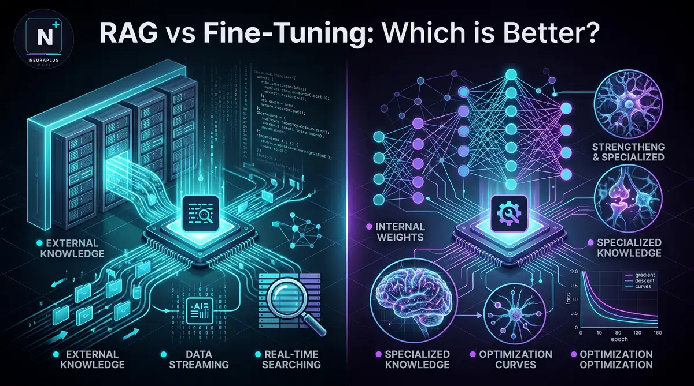

RAG vs Fine-Tuning: Which is Better for AI in 2026?

I get asked some version of this question almost every week: "Should we use RAG or fine-tune the model?" Usually by a founder or engineering lead who's hit the same wall everyone hits eventually. The base model is genuinely good at reasoning and language, but it has no idea what your refund policy says, what your product catalog looks like, or how your legal team likes contracts worded.
Two years of building both kinds of systems for clients has taught me one thing clearly: there's no universal winner here. People want a clean answer — "RAG is better" or "always fine-tune" — and I understand the appeal, but anyone selling you that answer hasn't shipped enough of these systems to see where each one breaks.
So let's get into it. I'll walk through how each approach works, where they genuinely differ, what they cost in practice, and — this is the part most guides skip — when you should just use both at once.
🎯 What You'll Learn: The fundamental differences between RAG and fine-tuning, when to use each approach, cost and performance comparisons, implementation strategies, and how to build hybrid systems that combine both for optimal results.
What RAG Actually Does
Picture handing your AI a library card instead of asking it to memorize the whole library. That's RAG in one sentence.
The mechanics break down into three steps. First, you index your content — PDFs, internal docs, support tickets — by chopping it into chunks and converting each into a vector embedding stored in a database built for similarity search. Second, when someone asks a question, the system searches that database for the chunks most likely to be relevant. Third, those chunks get stuffed into the prompt alongside the user's question, and the model answers using that context.
# Simple RAG pipeline example from langchain import OpenAI, VectorStore # 1. Load and chunk documents documents = load_your_documents() chunks = split_into_chunks(documents, chunk_size=500) # 2. Create embeddings and store in vector DB vectorstore = VectorStore.from_documents(chunks, embeddings) # 3. Retrieve relevant context for query relevant_docs = vectorstore.similarity_search(user_query, k=4) # 4. Generate answer with context prompt = f"Context: {relevant_docs}\nQuestion: {user_query}" answer = llm.generate(prompt)
What makes this genuinely useful is the update cycle. Change a document, and the next query reflects it instantly. No retraining, no waiting on a GPU job to finish.
What Fine-Tuning Actually Does
Fine-tuning is closer to teaching than referencing. You're not handing the model a lookup table — you're adjusting its actual weights so the knowledge becomes part of how it generates text.
The process looks like this: you gather a solid set of training examples (prompt-completion pairs, usually), run them through a training job that nudges the model's weights via gradient descent, check the results against data the model hasn't seen, then ship it.
# Fine-tuning example with OpenAI API import openai # Prepare training data training_data = [ {"prompt": "Our refund policy is:", "completion": "30 days..."}, {"prompt": "How to contact support:", "completion": "Email us at..."}, ] # Upload and fine-tune file_id = openai.File.create(file=training_data, purpose='fine-tune') job = openai.FineTuningJob.create( training_file=file_id, model="gpt-4o-mini-2024-07-18" )
Once that's done, the model doesn't need to "look anything up." The knowledge — or the style, or the terminology — is baked in.
Where They Actually Diverge
This is the part people gloss over, so let's be specific.
| Factor | RAG | Fine-Tuning |
|---|---|---|
| How it works | Pulls in external context at query time | Changes what's inside the model itself |
| Knowledge updates | Live immediately | Requires retraining |
| Time to running | Hours to days | Days to weeks (incl. data prep) |
| Starting cost | $50–$500 | $500–$10,000+ |
| Per-query cost | Higher (retrieval + generation) | Lower (generation only) |
| Hallucinations | Lower (grounded in retrieved text) | Higher (relies on absorbed patterns) |
| Source citations | Trivial — you know which chunks fed the answer | No such trail |
| Voice / tone control | Weaker | Wins by a wide margin |
| Domain jargon | Close with good retrieval | More reliable once trained |
| Data requirements | Whatever documents you already have | Curated, high-quality labeled examples |
When RAG Is the Right Call
A few situations where I'd reach for RAG without much hesitation:
- Your information changes constantly. News, pricing, inventory, policy updates — RAG keeps pace because you're just swapping documents.
- You need to show your work. Legal, healthcare, research — fields where "trust me" isn't good enough.
- You don't have much training data. RAG will happily work off a handful of PDFs.
- Hallucinations are a dealbreaker. Grounding answers in retrieved text cuts down dramatically on the model making things up.
- You need this live soon. Days, not weeks.
💡 Pro Tip: Building a support bot or document Q&A tool? Start with RAG. It's the lower-risk move, and you can layer fine-tuning in later once you understand your actual usage patterns.
When Fine-Tuning Is the Right Call
Flip side. Here's when fine-tuning earns its cost:
- Voice and style actually matter. If you need the model to sound like your brand consistently, fine-tuning gets you there in a way RAG can't.
- Your field has its own language. Legal contracts, medical notation, niche engineering terms.
- You need the same answer every time. A fine-tuned model is more predictable by design.
- Speed and scale are non-negotiable. Skipping the retrieval step matters at huge query volumes.
- The task requires real reasoning depth. Code generation, complex problem-solving.
⚠️ Important: Fine-tuning isn't magic. Feed it mediocre training data and you'll get a mediocre model — garbage in, garbage out applies here more than almost anywhere else in ML. Don't skip the data curation step to save time; you'll pay for it later.
For a deeper dive into choosing the right foundation model for your fine-tuning projects, check out our guide on the best open-source LLMs in 2026.
How They Actually Perform, Side by Side
Numbers from aggregated production systems and published research — take these as directional, not gospel, since actual performance varies by implementation quality.
| Task | RAG | Fine-Tuning | Winner |
|---|---|---|---|
| Factual Q&A | 92% | 78% | RAG ✓ |
| Writing style match | 65% | 94% | Fine-Tuning ✓ |
| Domain terminology | 80% | 95% | Fine-Tuning ✓ |
| Source citation | 98% | N/A | RAG ✓ |
| Code generation | 75% | 89% | Fine-Tuning ✓ |
| Current events | 95% | 40% | RAG ✓ |
| Complex reasoning | 70% | 85% | Fine-Tuning ✓ |
| Multi-language | 85% | 90% | Fine-Tuning ✓ |
What It Actually Costs
| Cost Factor | RAG | Fine-Tuning |
|---|---|---|
| Getting started | $50–$500 | $500–$10,000+ |
| Vector DB hosting | $0–$200/mo | N/A |
| Training compute | N/A | $50–$5,000+ per run |
| Per-query cost | $0.002–$0.01 | $0.001–$0.005 |
| Ongoing upkeep | Just update docs | Periodic retraining |
| Break-even point | Immediate | 50K–500K queries |
💰 Bottom Line: For most teams starting out, RAG is the better financial bet. Fine-tuning only makes sense once you're running serious volume — think 100K+ queries a month — where the lower per-query cost eventually offsets the upfront investment.
The Combination Nobody Talks About Enough
Here's what experienced teams figure out eventually, usually the hard way: you don't have to pick one.
The strongest production systems I've seen run both. Fine-tune the base model on your domain's language and style first, then layer RAG on top so it has access to current, factual information. The fine-tuned model handles both retrieval and generation in this setup.
What that gets you: domain fluency from the fine-tuning, current facts from the retrieval, a consistent voice throughout, citations where you need them, and fewer hallucinations overall.
# Hybrid RAG + Fine-Tuning pipeline def hybrid_query(user_question): # 1. Fine-tuned model understands the query refined_query = fine_tuned_model.refine_query(user_question) # 2. Retrieve relevant documents docs = vector_store.search(refined_query, k=5) # 3. Fine-tuned model generates the answer prompt = f"Context: {docs}\nQuestion: {user_question}" answer = fine_tuned_model.generate(prompt) # 4. Add citations from retrieved docs return add_citations(answer, docs)
If you're building AI agents that need both retrieval and specialized reasoning, our LangChain AI agent tutorial walks through this hybrid approach step by step.
Getting Started With Either Approach
Building a RAG System
Pick your stack first — a vector database like Pinecone, Weaviate, Chroma, or Qdrant; an embedding model from OpenAI, Cohere, or open-source; your LLM; and a framework like LangChain or LlamaIndex. Then prepare your documents: clean them up, split into 500–1000 token chunks, and tag with metadata like source and date. Build the pipeline — embed, store, wire up retrieval, connect to your LLM. Then test relentlessly: run real queries, tweak chunk sizes and retrieval parameters, and refine your prompts until answers are actually good.
Fine-Tuning a Model
Start with the data, because it's the whole game. Collect 100–10,000 genuinely high-quality examples, format them properly, and make sure they're diverse. Pick a platform — cloud APIs like OpenAI, Anthropic, or Google for simplicity, or open-source routes like Hugging Face with LoRA or QLoRA for more control. Train the model, watch the loss curves, then evaluate properly before you ship: test against held-out data, compare to the base model honestly, and keep monitoring once it's live.
For developers picking a model for coding tasks, our guide on the best LLMs for coding in 2026 breaks down fine-tuned options for software development.
Mistakes I See Constantly
With RAG
- Chunking by raw character count instead of respecting document structure — this destroys context and tanks retrieval quality.
- Using generic embeddings that don't understand the domain's vocabulary.
- Getting retrieval count wrong both ways — 2 chunks gives nothing to work with, 50 drowns the model. Aim for 4–6.
- Ignoring metadata, when filtering by date or category could meaningfully improve retrieval.
With Fine-Tuning
- Using a large pile of mediocre examples instead of a smaller set of excellent ones. A hundred great examples beats ten thousand average ones.
- Overfitting — the model memorizes the training set instead of learning the pattern. Always hold out validation data.
- Catastrophic forgetting — aggressive fine-tuning can erode general knowledge. LoRA helps preserve what it already knew.
- Skipping evaluation entirely before shipping.
🚨 Warning: Never fine-tune on sensitive data without real security controls. Fine-tuned models have been shown to leak training data through carefully crafted prompts. Guardrails aren't optional here.
Three Examples From Actual Deployments
Customer Support, RAG Approach
An e-commerce company with around 50,000 products had a support team drowning in repetitive questions. They built RAG over their product catalog and policy docs. Result: 85% of queries resolved without a human, response time dropped from 4 hours to 30 seconds, and satisfaction climbed 40%. Setup: 2 weeks, roughly $300.
Legal Document Review, Fine-Tuning Approach
A 200-attorney firm was spending 10+ hours per contract on manual review. They fine-tuned a model on 5,000 annotated contracts. Review time dropped to about 45 minutes, accuracy jumped from 70% to 96%, and attorneys handled roughly three times the caseload. Setup: 3 months, around $15,000 — a bigger lift, but the ROI was clear given the volume and stakes.
Research Assistant, Hybrid Approach
A biotech startup needed scientists to query across 10,000+ research papers. They combined a fine-tuned model with RAG over the paper database. Research time dropped 60%, scientists surfaced connections they'd otherwise have missed, and every answer came with citations. Setup: 6 weeks, roughly $8,000.
Where This Is Heading
A few trends worth watching: fine-tuning is getting accessible on regular hardware — models like Llama 3, Mistral, and Phi can now be fine-tuned on a single consumer GPU. Retrieval techniques keep improving too, with hybrid dense/sparse methods and reranking pushing RAG accuracy further. There's also movement toward models that learn continuously without a full retraining cycle, blurring the line between these two approaches. Multimodal RAG — retrieving over images, video, and audio — is moving from research demo to something usable, and automated fine-tuning tools are reducing the expertise needed to do this well.
Common Questions
Where I'd Land on This
So — RAG or fine-tuning? The real answer is it depends on what you're building, and anyone telling you otherwise is oversimplifying.
🔍 Lean RAG If:
- Your data shifts often
- You need citations
- Training data is thin
- Budget is tight
- You need to move fast
- Hallucinations are unacceptable
- You're building Q&A-shaped tools
🎯 Lean Fine-Tuning If:
- Voice and tone matter
- Your domain has specific language
- You've got solid training data
- Consistency is critical
- You're running high query volumes
- The task demands real reasoning
You're not locked into choosing one. The most capable systems in production today combine both, using each where it's strongest. If you're not sure where you land, start with RAG — it's the lower-commitment option, faster to stand up, and easier to course-correct. Once you understand your actual usage patterns, fine-tuning becomes a much more informed decision rather than a guess.
This space keeps moving fast, and the line between these two approaches is only going to get blurrier. The best move isn't picking a side — it's understanding both well enough to combine them when it makes sense for what you're building.
If you're looking to share your own experiences with RAG and fine-tuning, consider contributing through platforms listed in our AI niche guest post sites guide.